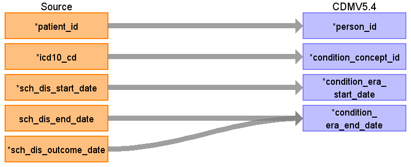

ターゲットテーブル:condition_era
・当テーブルはOMOP CDMのcondition_occurrenceテーブルから作成される。
・ETL処理についてはGitHub OHDSI/CommonDataModel に含まれているスクリプトを引用・改変している。
https://github.com/OHDSI/CommonDataModel/blob/main/rmd/sqlScripts.Rmd
・処理概要は以下の通り
30日ルール: 同一疾患の診断記録間隔が30日以内の場合、連続した一つのエラ（Era）として統合される。
エラ期間: 疾患の開始から終了（30日間隔が空く）までの期間とする。
発生回数: 一つのエラ内に含まれる診断記録の件数
本項では、condition_occurrenceの元となる、PatientDisease と condition_era テーブルの各項目のとの出力結果の対応を記載する。

| Destination Field | Source field | Logic | Comment field |
|---|---|---|---|
| condition_era_id | 一意の連番を設定する | ||
| person_id | patient_id | person.person_source_valueと結合してperson_idを取得・登録する |
|
| condition_concept_id | icd10_cd | condition_occurrenceを作成するときにマッピングしたOMOP標準コードが設定される |
|
| condition_era_start_date | sch_dis_start_date | 患者、病名毎にcondition_start_dateのうち最初の日付
|
|
| condition_era_end_date | sch_dis_outcome_date sch_dis_end_date |
患者、病名毎に以下を集計
・condition_end_date、condition_end_dateが存在しない場合condition_start_date+1日のうち、最後の日付 |
|
| condition_occurrence_count | 患者毎の対象期間の同一病名のcondition_occurrenceのレコード数（30日毎） |